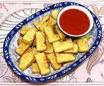

|
Deep Fried Shan TofuBurma | ||||
| Serves: Effort: Sched: DoAhead: |
6 app ** 20 min Most |
An excellent appetizer, combined with your dip of choice. It presents contrasting textures and flavors, and is vegetarian too. It is quick and easy, but best to make the Shan Tofu a day ahead (also quick and easy). | |||
|
1 ------ ar ------ a/r |
# --- --- |
Shan Tofu (1) -- Dip Chili Garlic Sauce (2) ------------- Oil, deep fry |
Prep (5 min)
|